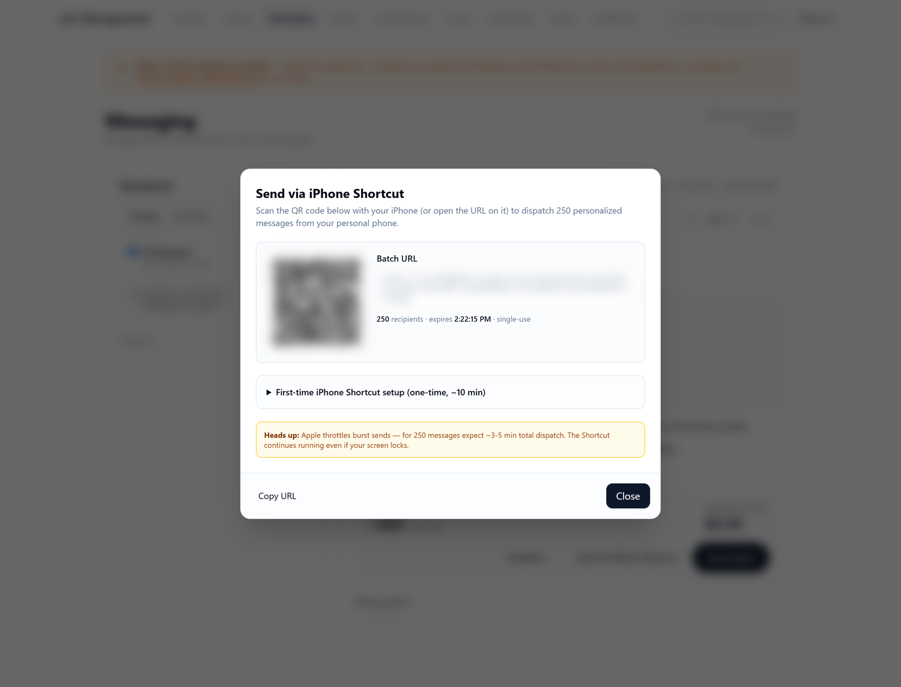

LCC Management System
Bilingual SMS and contact operations for a member organisation, live in production, with authorisation enforced in the database rather than in route guards.
1 · What it is: one app, two doors into the same tables
Contacts, groups and bilingual SMS broadcasts run out of one SvelteKit app on Vercel, backed by Supabase Postgres and sending through Twilio. About ten administrators use it. It reaches 450 contacts, none of whom have opted out, and its largest group holds 323 members. Public intake forms write to the same tables the admin app reads, which is the fact that decides most of the design below.
- 450
- contacts reachable,
0 opted out - 587
- lines of SQL
across 9 migrations - 18
- row-level-security policies
over 7 tables - 4 years
- TCPA limitations period the
opt-out record has to survive
2 · Authorisation lives in the database, not in route guards
The schema is the substance of this project. 587 lines of SQL across 9 migrations define 7 tables and 11 indexes, and attach 18 row-level-security policies to them. RLS is enabled on all 7 tables. Who may read or write a given row is decided in Postgres, not in a server-side check that happens to run first.
The reason is the second door. Public intake forms write to the same tables the admin app reads, so there are two code paths into one dataset and only one of them sits behind an admin session. A rule enforced in the admin path is, by construction, not enforced in the other. Moving the rule next to the table makes it apply to both, and makes it apply to whatever gets added later without anyone having to remember it. It is also why the policy count runs ahead of the table count: 18 policies over 7 tables.
| Object | Count |
|---|---|
| Migrations | 9 |
| Tables | 7 |
| Tables with RLS enabled | 7 |
| Row-level-security policies | 18 |
| Indexes | 11 |
| Lines of SQL | 587 |
3 · An opt-out row is never deleted
TCPA exposure does not end when a contact changes their mind. The value a regulator asks for is when consent was withdrawn, and the statute of limitations runs four years. A schema that removes the opt-out row when someone re-subscribes has destroyed the only record that answers that question, and it destroys it at the exact moment the situation looks resolved.
So opt-out rows are never deleted here. Re-subscribing sets resubscribed_at,
which leaves the original opt-out timestamp intact, and every send path filters on
resubscribed_at IS NULL. One column carries both jobs: it is the live sending
rule and it is the four-year evidence trail, so keeping the record and behaving correctly are the
same act rather than two obligations that can drift apart. The 450 contacts reachable, 0
opted out counter in the screenshots below is what the operator sees before they
compose.
4 · The same message takes one segment in English and three in Spanish
Measured live in production on 2026-09-09: one announcement, composed twice, aimed at the same group of 323 members. The counter above the compose box is not decoration, it is the thing that caught this.

GSM_7BIT_EXT
UTF16| Composed in | Encoding | Chars per segment | Message length | Segments |
|---|---|---|---|---|
| English | GSM_7BIT_EXT | 153 | 116 | 1 |
| Spanish | UTF16 | 67 | 169 | 3 |
¿ / ¡ force
UCS-2, which cuts the per-segment budget from 153 characters to 67. The Spanish text is a little
longer than the English and lands in a budget less than half the size, so it takes three segments
instead of one.At an estimated reach of 323 recipients and Twilio's RATE_PER_SEGMENT = 0.0079,
the paid path for that Spanish blast carries an estimated cost of $7.66. The failure mode
is not the price of a single send. It is that the Spanish half of a bilingual campaign consumes
three segments where its author assumed one, and nobody finds out, because both versions send
successfully. One live template was doing exactly this. I fixed it and then locked the fix behind
an automated test asserting a segment budget per template, so the next person to edit the copy
learns about it at test time rather than on the invoice.
5 · $7.66 is the avoided cost, not a bill
That estimate is what the paid path would cost. The operator does not have to pay it.

prepare-shortcut mints a single-use, time-limited batch URL, 32 bytes from
crypto.getRandomValues, and renders it as a QR code. The row is marked
used_at on first fetch, so the token cannot be replayed: a URL that is
screenshotted, forwarded, or read over someone's shoulder is already spent. An iPhone Shortcut
scans it, fetches the precomputed send list and dispatches from the operator's own phone. That
costs nothing, and it sidesteps A2P 10DLC carrier filtering.
The part that matters is what the free path did not get to skip. The endpoint reuses the
same recipient resolution and consent gates as /api/blast/send. The same
resubscribed_at IS NULL filter decides who is in the batch whichever button the
operator presses, so the cheap route is a change of carrier, not a change of rules. Consent was
not routed around to save $7.66.
What the free path does cost is time, and the dialog says so rather than letting the operator discover it mid-send: Apple throttles burst sends, so 250 messages take roughly 3 to 5 minutes to dispatch, and first-time setup of the Shortcut is a one-off ten minutes.
6 · Also in the build
- Admin-approval gate for new accounts. There is no self-serve signup into an app holding 450 contacts' phone numbers.
- iOS Shortcuts bridge at
/api/shortcut/*. - English and Spanish templates, with the per-template segment budget test attached.
- Image and MMS attachments.
- Scheduled send.